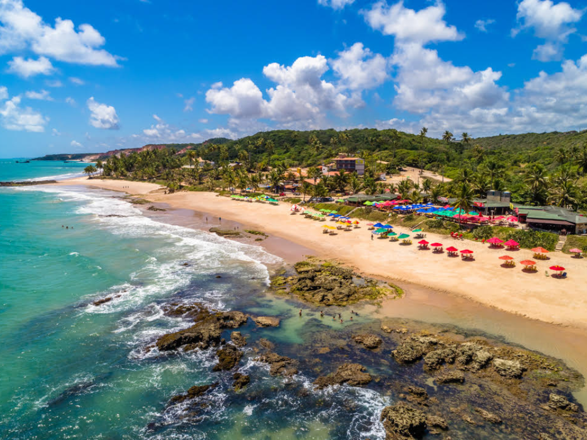

Pernambuco é um estado da região Nordeste do Brasil que se destaca por sua rica história, cultura e importância econômica. Sua capital, Recife, é conhecida como a “Veneza Brasileira” por causa de seus rios e pontes, além de possuir um grande desenvolvimento urbano e turístico. O estado também abriga a cidade histórica de Olinda, famosa por suas ladeiras, igrejas antigas e pelo tradicional carnaval de rua, marcado pelo frevo e pelo maracatu. Pernambuco possui belas praias, forte produção cultural e uma economia diversificada, com atividades ligadas ao comércio, à indústria, ao turismo e à agricultura. A culinária pernambucana também é muito apreciada, com pratos típicos como bolo de rolo, tapioca e carne de sol.

Voltar